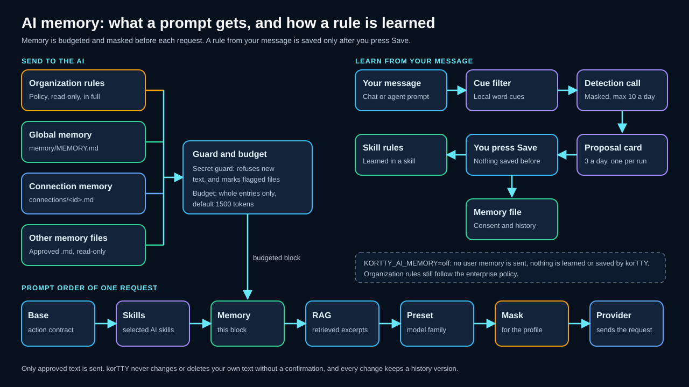
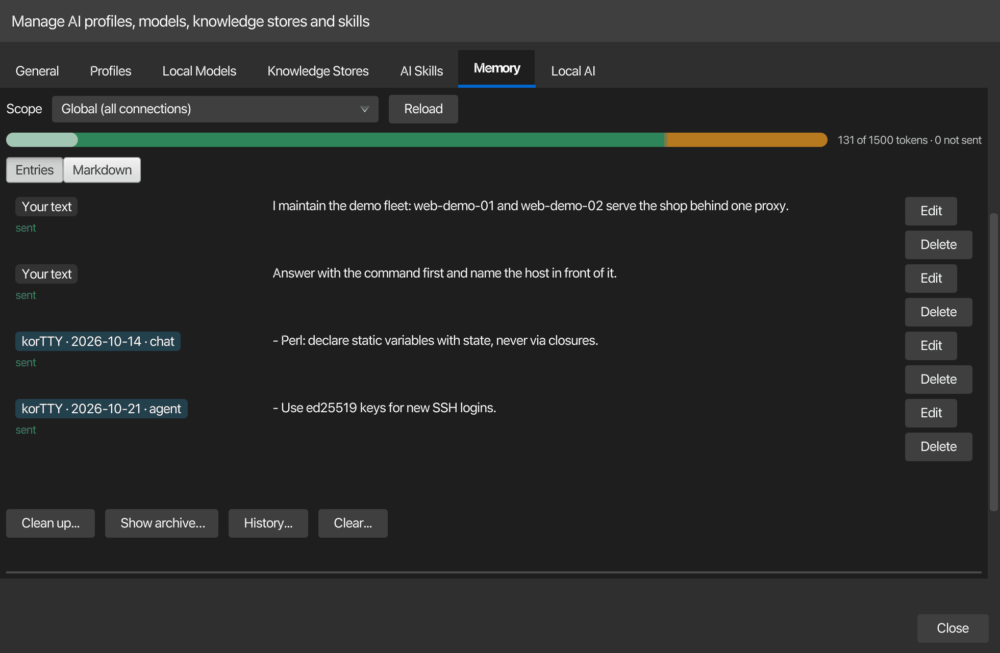
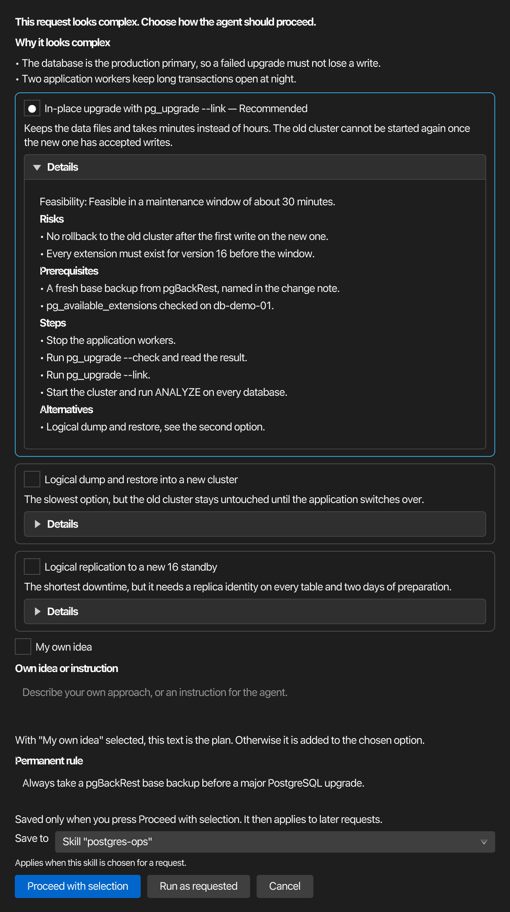
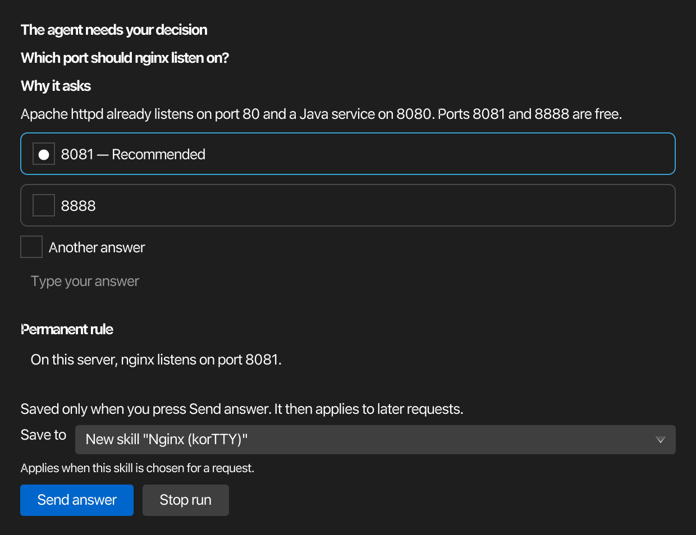
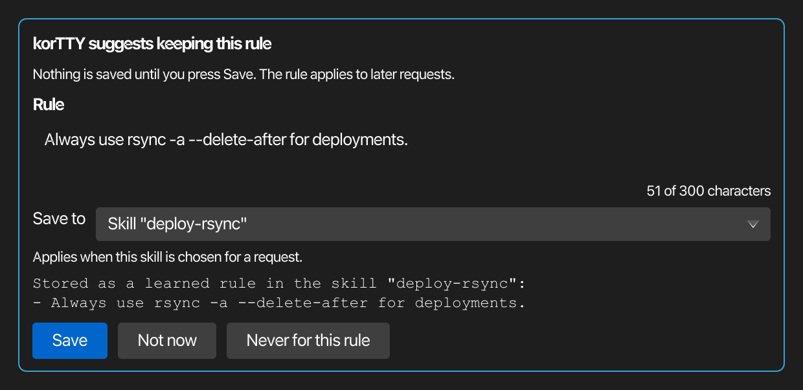
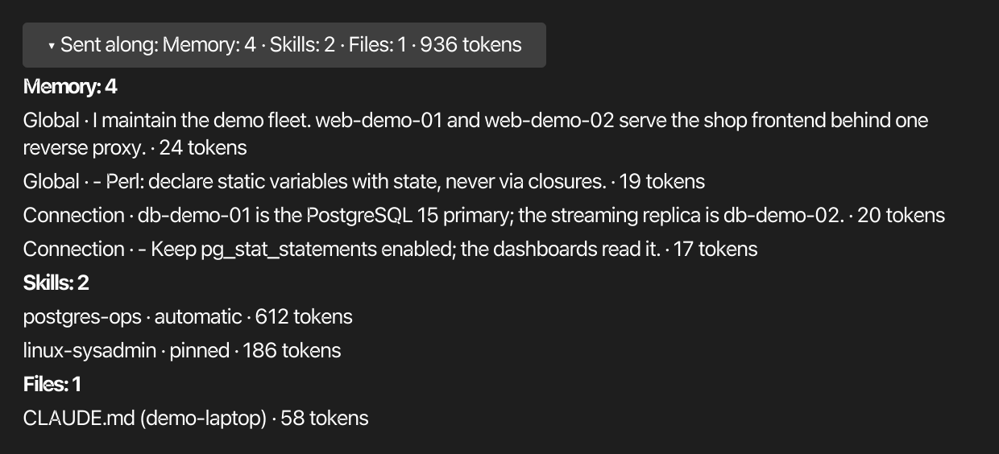

AI memory¶
AI memory is a short list of standing rules that korTTY adds to your AI requests, so a preference you state once, for example "always use tabs in Perl", applies to later chats and agent runs without being repeated. The rules are plain Markdown files on this computer. You write them yourself, and korTTY can suggest rules it notices in your messages. A suggestion is saved only after you press Save, and korTTY never changes or deletes text you wrote.

What memory is¶
Memory holds two kinds of text. Your text is any paragraph you wrote in a memory file. korTTY entries are rules that korTTY saved after you confirmed them. Each korTTY entry is fenced by comment lines that name korTTY as its origin, the day it was saved and its source, and it is limited to 300 characters:
<!-- kortty:entry id=3fa9 origin=korTTY sha256=… created=2026-11-02 source=chat -->
- Perl: declare static variables with `state`.
<!-- /kortty:entry -->
The fence stores a hash of the entry's text. If you edit an entry, its text no longer matches the hash, so korTTY stops treating it as its own and the entry becomes your text.
Memory has two scopes:
- Global memory (
memory/MEMORY.md) applies to every connection. - Connection memory (
memory/connections/<id>.md) applies to one saved connection, next to the global rules.
Both files are in the korTTY configuration folder, ~/.kortty/memory/. Approved reference files of other AI tools are a third source, described in Further memory files.
Where memory is used¶
The table lists the features that send memory and what each one receives.
| Feature | Memory sent | Scope |
|---|---|---|
| AI chat (questions, summaries, problem solving and the other chat actions) | Yes | Global, plus the connection the request belongs to |
| AI Agent and AI Planning, including the complexity check | Yes | Global, plus the connection of the terminal tab, or the connection a swarm agent or a job drives |
| Swarm summary, which combines the results of the agents | Yes | Global only |
| Scheduled jobs | Yes | Global, plus the job's connection when it has one |
| Workflow generator | Yes | Global only |
| Actions with a strict JSON reply, such as the snippet analysis, review, completion and improvement actions | No | None |
| Correction of a snippet description or selection, selection translation, Mermaid diagrams and AI ASCII-art pictures | No | None |
| Describing a snippet (selection or whole snippet) | Yes | Global, plus the snippet's connection |
The rule detection call receives no memory, and the memory clean-up sends only the entries it works on (see Clean-up and archive).
The Memory tab¶
Open AI > AI Manager > Memory. The tab shows the switches, one scope at a time, the budget with what is sent, the entries or the raw Markdown of the scope's file, and the clean-up and history actions.

| Control | Label | What it does |
|---|---|---|
| Switch | Use memory | Turns your own memory on or off. Off means your memory files and your reference files are not sent, and nothing is learned. Organization rules still follow the policy. Your organization can lock the switch. |
| Learning | Learning, with Suggest rules or Off | Suggest rules lets korTTY propose a rule after a message that asks for something to be kept. Off proposes no rules. |
| Budget | Token budget | The number of tokens of memory one request may carry: 500 to 4000 in steps of 100, default 1500. A cap set by your organization is shown below the field. |
| Scope | Scope, with Global (all connections) or one connection | Chooses the file that the tab shows and that its buttons change. |
| Views | Entries and Markdown | Entries lists one row per paragraph or korTTY entry, with Edit and Delete. Markdown shows the raw file in an editor, with Save file. |
| Budget bar | {0} of {1} tokens · {2} not sent |
How much of the budget this scope fills, and how many entries did not fit. The bar turns yellow at 80 percent and red at 100 percent. |
| Clean-up | Clean up... | Merges korTTY entries or archives old ones. See Clean-up and archive. |
| Archive | Show archive… | Lists the archived korTTY entries, and lets you restore or delete them. |
| History | History... | Lists the earlier versions of the file, and restores one after a confirmation. |
| Clear | Clear... | Empties the file after you confirm a diff. The previous version stays in the history. |
| Reload | Reload | Reads the file from disk again. |
| Save | Save | Saves the switches, the learning mode and the budget. |
Each row in the Entries view shows a badge and a status. The badge reads Your text, or korTTY with the date and the source of the entry. The status reads sent when the row is part of the block of the next request, and not sent when the budget leaves it out.
Warnings appear above the rows. From your organization lists the organization rules, which you can read but not change. A policy banner explains when the policy turns the memory off or makes it read-only, and a banner names the environment variable when the kill switch is set. A secret banner names the line of a file that may hold a secret (see Secret guard).
Global and connection memory¶
Global memory applies to all connections. Connection memory applies to one saved connection, for example to rules about one server. To edit it, open the connection editor, switch to the AI tab and choose Edit connection memory.... The button is available once the connection is saved, because its memory file is named after the connection's stable id. The memory opens in its own window with the scope set to that connection, and its settings are saved when the window closes.
When a request carries memory, the organization rules come first, then the global memory, then the connection memory, and the reference files last. When the budget is tight, the connection memory is filled before the global memory.
Your text is protected¶
korTTY changes a memory file only when you ask it to, or when you confirm a change it proposes. Every change that korTTY makes on its own needs its own confirmation, which covers that one change. A change is refused when it would alter a paragraph you wrote, when the file changed outside korTTY in the meantime, or when the new text holds a secret.
Clear, the clean-up and the shortening show a diff of the change first, and nothing is saved until you press the button of that diff dialog.
Each change first saves the previous file in memory/history. korTTY keeps up to 100 versions per scope and drops versions older than 365 days. History... lists them and shows the difference to the current file. Restoring a version asks for a confirmation, and the text it replaces stays in the history, so you can go back to it.
If the file changes outside korTTY while you edit the Markdown view, your unsaved edits are kept and the view says that the file changed. Reload the file to see the new text.
Budget and what is sent first¶
Each request carries one memory block of at most the token budget, which is 1500 tokens by default. Inside that budget, korTTY adds the parts in this order:
- Organization rules, always in full. They are not cut for the budget, but they leave less room for everything else.
- Connection memory: your paragraphs in file order, then the korTTY entries, newest first.
- Global memory: the same order as the connection memory.
- Approved reference files, within their own cap of 1000 tokens in total (see Further memory files).
A paragraph or entry is sent whole or left out; korTTY never cuts text in the middle. An item that does not fit is skipped, and a smaller item after it can still be sent. The block tells the model how many entries were left out, and the budget bar and the Sent along row show the same count.
A memory file has a soft limit of twice the budget, estimated in tokens. Above that limit korTTY refuses to add more text and asks you to tidy the file first. A file also has a hard limit of 64 KB. If your organization sets a cap on the budget, the field in the Memory tab stops at that cap.
Clean-up and archive¶
Clean up... offers three steps. Each one has its own confirmation.
- Merge korTTY entries asks the default AI profile to combine the korTTY entries into one list without duplicates. Only the korTTY entries are sent to it, and you see the result as a diff before anything is saved. Your own text stays as it is. This step needs a default AI profile, and an unlocked master password vault when that profile's API key is stored there.
- Archive old korTTY entries lists the korTTY entries that are older than 180 days. You choose which of them to move. Entries you leave unchecked stay in the file.
- Also suggest shortening my own paragraphs asks the AI for shorter versions of your paragraphs. The suggestion is shown as a separate diff, it changes your own text, and it is saved only after you press Apply. It is never combined with the merge.
If the AI reply cannot be used, or does not match the entries that were sent, nothing is changed and the tab says so.
Show archive… lists the archived entries, newest first. Restore puts the selected entries back at the end of the file after a confirmation, and checks them like any other korTTY change. Delete permanently… removes the selected entries from the archive for good, which cannot be undone. The archive is kept in memory/archive.md.
Further memory files¶
Other AI tools keep their own rule files, for example CLAUDE.md, AGENTS.md, Gemini or Qwen instructions, Kiro steering files, Cline rules, GitHub Copilot instructions or Cursor rules. korTTY can read these files as reference material once you approve them. It reads the original file each time a prompt is built and sends it only while its content matches the approved digest. They are read-only: korTTY never writes to them and never deletes them.
In the Other memory files section of the Memory tab, choose Search... to look in the places that the known tools use, or Choose file... to pick a file yourself. Search... looks in your home folder and, when you choose one, in a project folder that you name. Only Markdown files (.md and .mdc) can be added. Nothing is read until you pick a file.
The approval dialog shows the full text of the file before you approve it. Invisible characters are removed, the path and the tool are shown, and a warning appears when the file lies in a Git repository, because a repository can hold files that other people wrote. Press Approve and send to approve the text exactly as it is shown.
Each approved file has a Send switch and a status:
| Status | Meaning |
|---|---|
| active | The file is sent with the text you approved. |
| changed | The file changed after your approval, so it is not sent. Press Approve again... and check the new text to send it. |
| missing | The file no longer exists. |
| refused | korTTY refuses the file, because its text holds a possible secret or because its location is not allowed. The reason is shown. |
| off | The Send switch is off. |
The limits are these:
- korTTY reads a file of up to 1 MB; a larger file is refused.
- Each file adds at most 16 KB to a request, and a longer file is cut at a paragraph or line boundary.
- All approved files together add at most 1000 tokens to a request.
- The text is sent inside a block that is marked as reference data, so it cannot override the korTTY rules.
- A file must lie in your home folder or in the project folder you chose; when your organization sets a list of allowed folders, it must also lie in one of them, and it must not be on a network drive.
- korTTY reads only files on this computer, never files on a remote host that you reach over SSH.
For a Local CLI AI profile, korTTY does not send the reference files that the CLI reads by itself, so they are not sent twice. The table covers the CLIs of Claude Code, Codex, Gemini CLI, OpenCode, Kilo, Qwen Code, Kiro, Cursor agent and Cline.
The triage card¶
Before an interactive agent run starts, korTTY can judge the request and offer solution options. The setting is Estimate complexity in AI > AI Manager > General, in the Terminal agent section.
| Mode | Behavior |
|---|---|
| Automatic | Before each eligible run, one small AI call judges the request. Only requests that look complex get the options card. |
| Always | Every eligible run shows the options card first. |
| Never | Requests run as they are, without the check and without a card. |
Your organization can set this mode and lock it.
Eligible runs are interactive agent runs: in the classic AI Agent panel, in the run tab of the chat window and in the host of an agent design. An Ask request, which answers without running commands, a run that already has an accepted plan, and a run in a policy that does not allow planning get no check. Swarm runs and scheduled jobs never get the card.
In Automatic and Always, each eligible run first makes one extra small AI call, which carries the run's memory. This costs one additional request per run. The call has a two-minute limit. If it fails or gives no usable answer, the run continues as requested, and the activity log says so.

The card has these parts:
- a header that says whether the request looks complex, with the reasons for that judgement;
- one card per option, two or three of them, with the recommended option first and marked Recommended; each option shows its feasibility, and its Details section with the risks, prerequisites, steps and alternatives opens when you select that option;
- My own idea, with a text field for your own approach or an instruction;
- an optional Permanent rule, with the text of the rule and a Save to choice.
The Save to choice offers Global memory, This connection, an existing skill, or a new skill. A rule is saved only when you press Proceed with selection. A rule that holds a secret is refused, and the card stays open with the line that was refused.
| Button | Result |
|---|---|
| Proceed with selection | Runs the chosen option as the plan of this run. With My own idea selected, your text is the plan; otherwise your text is added to the chosen option as an instruction. Saves the permanent rule if you wrote one. |
| Run as requested | Runs the request as you wrote it. Text you typed in the idea field is added as an instruction. |
| Cancel | Ends the run before anything runs. |
If you do not answer within 10 minutes after the card appears, the request runs as asked.
Questions during a run¶
When a decision only you can make blocks the task, the agent asks you instead of guessing or retrying. A typical case is a port that another service already uses: the agent checks which ports are free and asks which one to use. The question appears on the same card, in a shorter form:

- The agent needs your decision, with the question and, under Why it asks, the agent's reason;
- the suggested answers, the recommended one first and marked Recommended;
- Another answer, with a text field for your own answer; text you type there while a suggested answer is selected is added to that answer;
- the optional Permanent rule, as on the options card, for example to keep a port for this connection.
| Button | Result |
|---|---|
| Send answer | Continues the run with your answer, which binds the following steps. Saves the permanent rule if you wrote one. |
| Stop run | Ends the run at the question. |
A question does not use up one of the run's planning steps. A run asks at most three questions. After that, and when you do not answer within 10 minutes, the agent decides by itself and names its choice. Swarm runs and scheduled jobs never ask: there the agent decides by itself as well.
When the same error comes back from more than one command, korTTY tells the agent so, and the agent changes its approach or asks you instead of trying the same thing again.
Rule learning¶
With Learning set to Suggest rules, korTTY looks for a lasting rule in your own messages after the answer or the run is complete. The check runs in steps, and most messages stop early.
- A local filter looks for one of these multi-word cues, in German and in English:
ab jetzt,ab sofort,in zukunft,künftig,zukünftig,merk dir,merke dir,verwende immer,benutze immer,nutze immer,from now on,remember that,always use,never use,in the future,going forwardandmake sure to always. A single word such asimmernever counts. - Messages longer than 2000 characters, messages that are mostly code and questions are skipped. A polite request that ends with a question mark is still a request.
- A message with a possible secret is never sent anywhere.
- Otherwise one small AI call decides whether the message asks for a lasting rule. The call uses the profile of the chat or run, the message is masked for that profile, and the call carries no memory, no skills and no internet tools.
The limits are at most 10 of these calls and 3 proposal cards per day, at most one card per answer or run, and a detection that takes longer than 90 seconds is dropped. A rule that you postponed or rejected is not suggested again for the same message.

The proposal card appears under the chat answer, or in the activity list of the agent run; for other agent designs it appears in the design's popup. It shows these parts:
- the rule as editable text of at most 300 characters, with a counter;
- the target, and a preview of where the rule will be stored;
- Save, Not now, which asks again after 7 days, and Never for this rule.
Nothing is saved until you press Save. Then a notice appears for 30 seconds with an Undo button, which removes the rule again.
You can also add a rule yourself. The menu of your own chat message and the agent prompt dialog offer Remember as rule…, which opens the same card for the text you choose. No AI call is made for it.
Where a rule goes¶
korTTY suggests a target for each confirmed rule, and the first rule that fits wins:
- A rule that names the active connection or its host goes into that connection's memory.
- A rule about a topic with a built-in skill, such as Perl, goes into that skill's learned rules. A skill you have tagged with the same topic is preferred over the built-in skill.
- A rule about a known language or tool that has no skill, for example Docker or Terraform, creates a new korTTY skill that starts with this rule.
- Any other rule goes into the global memory.
Rules go into a skill only when korTTY may create skills and save learned rules in them is on in AI > AI Manager > AI Skills. For example, if you write "From now on, declare static variables in Perl with state", the built-in Perl skill is suggested as the target, and once you press Save, the rule is saved as one of its learned rules. The built-in text of the skill stays unchanged.
A new skill carries the badge NEW · created by korTTY until you select it in the skill list, and then the badge reads korTTY. A skill with learned rules shows a +N rule(s) chip. Its learned rules are listed in the Learned rules section, where you can edit or delete them. Learned rules survive a reset or an automatic update of a built-in skill. They are sent together with the skill whenever the skill is selected for a request, as long as the memory is on. For the size and the use of skills, see AI Skills.
Sent along¶
Under each chat answer, and in each agent run, a collapsed row starts with Sent along:, followed by the counts and the tokens of what was sent: memory, skills and files.

Expanded, the row lists the memory entries with their origin (organization, global or connection), the skills (automatic or pinned, and shortened when that applies) and the reference files, each with its tokens. The texts are the masked copies that the provider received, and the tooltip of an entry shows its text. If entries did not fit the budget, the row says how many. The design host of other agent designs links to the same information.
Secret guard¶
korTTY refuses to store a secret in anything that the AI reads back: AI skills, learned rules, memory files and approved reference files. The guard checks four kinds of text, and the first match refuses the whole text:
- a token in a known format, such as a private key or a provider token;
- a password or token assignment with a literal value, such as
db_password=…; - a password or token named in prose, such as "the password is …";
- a long random-looking string, and, while the vault is unlocked, a password that you saved in korTTY.
The refusal names the line and the kind of secret. It never shows the value. A file that already contains a secret is only flagged, not changed: its skill gets a badge named possible secret in the AI Skills list, and the Memory tab shows a banner with the line. A flagged file or skill is still sent with requests until the secret line is removed; only the outbound masking applies. While a memory file holds a flagged line, every save of that file, including the Markdown view and new rules, is refused until that line is removed. Before a request leaves korTTY, the outbound masking also replaces the values of password cues in prose, except for the integrated local models.
Residual risk
The guard cannot recognise a password that has no keyword, no known format and is not saved in the vault. Do not write passwords, keys or tokens into memory, skills or reference files, and keep them in the vault or in your password manager.
Kill switch¶
Set the environment variable KORTTY_AI_MEMORY to off to switch your memory off for one session, for example for support sessions, demonstrations or automated tests. With this value, korTTY sends none of your memory files, global, connection or reference, learns no rules and proposes no rules to save. The Memory tab shows a banner that names the variable. You can still open and edit the files in the Memory tab yourself.
Organization rules are not covered by the variable. They follow the enterprise policy, which can send them even when your own memory is off.
Policy and files¶
Your organization controls memory with the ai-memory feature, the [rule.ai-memory] table and the [[organization-memory]] blocks. The table covers the user's memory mode, learning, skill creation, reference files, the budget cap, the triage mode and skill statistics. The organization rules are read-only and come first in every prompt. See Enterprise policy for every key.
The memory files are kept in ~/.kortty/memory/: MEMORY.md, the connections folder, history, archive.md, state.json, learning.json and external.json. Skill statistics are in ~/.kortty/stats/. korTTY writes these files owner-only, and they are part of a backup. A restore adds only the memory files that do not exist yet on the computer, so it never replaces your current memory, and it never restores the list of approved reference files; approve those again on the new computer. For the complete list of files, see Configuration files and Backup.
Related pages¶
- AI assistant describes the chat and the AI profiles that send the memory.
- AI agent designs and AI swarm describe the runs that show the solution options and the Sent along row.
- AI Skills describes skill statistics and learned rules.
- AI settings describes the General tab, where the triage mode is set.